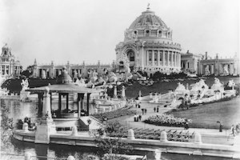
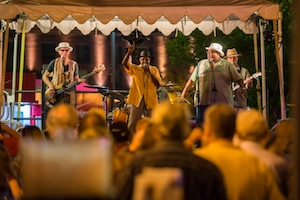
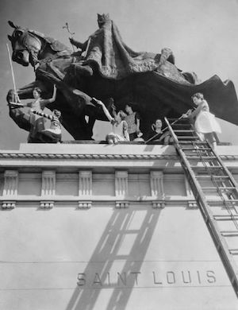

Compton Hill Water Tower
Welcome to the Compton Hill Water Tower, the newest of the St. Louis' three towers.

The tower under scaffolding during construction, 1898.
Before you enter, walk around the tower.
Built on the 36 acre Reservoir Park, it was completed in 1898 after a design by Harvey Ellis at a cost of $48,000.
Get closer to the exterior walls and notice their texture.
The 179-foot tower is made of rusticated limestone, buff-colored brick and terra cotta. Its walls are adorned with carvings of mythical animals and leaf patterns.
Now, go inside.
Inside, spiral steps take visitors to the top of the tower where an observation deck under a bell-shaped roof of terra cotta tiles offers a 360-degree view of the City of St. Louis.

Festival Hall, Louisiana Purchase Exposition, St. Louis, 1904.
Take your time as you walk up the stairs.
During the World’s Fair in 1904, as many as 5,000 people visited the tower and promenaded in carriages through Reservoir Park.
Footnote
You are now approaching Laclede's Landing, a small urban historic district in St. Louis.
Walk up to the entrance of the district.
Visible from both an elevated highway and the streetscape below, Footnote is a 49-foot-tall, bright orange, blue steel, and copper spire composed of intersecting linear elements.

Laclede’s Landing is downtown St. Louis’ oldest district and only riverfront entertainment/dining destination.
Do you notice anything familiar about the sculpture?
Resembling a giant abstracted treble clef, the sculpture calls our attention to and acts as a marker to the entrance of Laclede’s Landing, a lively entertainment district on the banks of the Mississippi River.
Footnote was designed by Los Angeles-based artist Susan Cooper.
In designing this site-specific work, the artist incorporated several defining elements of the Landing and St. Louis history into an abstract three-dimensional work. These themes include the historic river and land routes that converge in St. Louis as well as its history as a jazz capital.
The piece is fabricated from copper and mild steel painted with powder coat enamel, the most durable of paint treatments.
It has a clear coat added to prevent scratches deep enough to mar the color. Reflective highway paint was used on one linear element.
Apotheosis of St. Louis
From any point on Art Hill, the Apotheosis of St. Louis is hard to miss. At 27 feet tall, the statue looks proudly over the hill, welcoming visitors to the historic grounds.
What you may not have known, is the statue didn't always stand in this iconic location.
The original plaster model of the statue of the Crusader King, Louis IX of France, stood at the main entrance to the 1904 World’s Fair. The statue stands as a symbol of Christianity, the Crusading spirit, and the strength and vitality of the City of St. Louis.

Students from Washington University help in scrubbing the statue, 1932. Local groups took part in the periodic cleaning.
Walk up to the sculpture. Can you tell that it's not the original?
After the Fair, the Louisiana Exposition Committee decided to have the sculpture re-cast and presented as a permanent gift to the City. The Committee approached Niehaus, who offered to cast it in bronze for $90,000, a price so high that the project was cancelled. H.R. Hodges, a local firm, offered to do it for $37,500.12. The artist protested and sued for ownership rights, but the commission accepted the Hodges offer and the statue was replicated. Seven months after the dedication of the new gift, the artist was awarded $3,000 in payment with the stipulation that the pedestal be inscribed “Designed by C.H. Niehaus.”
After the Gateway Arch, the Apotheosis remains one of St. Louis' defining symbols.
For many years, Apotheosis of St. Louis was used as the symbol of the City, until it was displaced by the Gateway Arch.